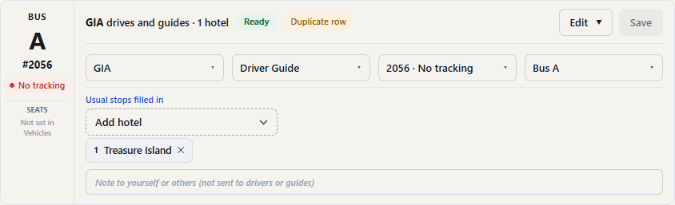

<title>CCL Removed Cars</title>
<meta name="claude:viewport-fit-sides" content="cover">
<style>
/* 布局：竖排阅读页；每块左「现在（ops 真截图）」右「改后（样稿）」，窄屏上下叠。样稿照 Dispatch 白卡片。 */
:root{
  --bg:#eef0f2; --paper:#fbfbfa; --ink:#1a1a1a; --mute:#5b6270; --line:#d6dae0; --accent:#2f5d8a;
  --q:#fff6d6; --qline:#e6cf7a;
  --f-body:"Inter","Segoe UI","Microsoft YaHei",system-ui,sans-serif; --f-head:"Space Grotesk","Inter","Microsoft YaHei",sans-serif;
}
@media (prefers-color-scheme:dark){:root:not([data-theme="light"]){--bg:#12161b;--paper:#1b2027;--ink:#e7e9ec;--mute:#a2aab4;--line:#323a44;--accent:#8db8e3;--q:#2d2814;--qline:#6b5a22;color-scheme:dark}}
:root[data-theme="dark"]{--bg:#12161b;--paper:#1b2027;--ink:#e7e9ec;--mute:#a2aab4;--line:#323a44;--accent:#8db8e3;--q:#2d2814;--qline:#6b5a22;color-scheme:dark}
body{background:var(--bg);color:var(--ink);font-family:var(--f-body);line-height:1.65;padding-block:28px 60px;padding-left:max(16px,env(safe-area-inset-left,0px));padding-right:max(16px,env(safe-area-inset-right,0px))}
main{max-width:1180px;margin:0 auto;display:grid;gap:34px}
h1,h2,h3{font-family:var(--f-head);text-wrap:balance;margin:0}
h1{font-size:1.75rem} h2{font-size:1.25rem;border-bottom:1px solid var(--line);padding-bottom:6px} h3{font-size:1rem}
p{margin:0} .mute{color:var(--mute)}
code{font-size:.86em;background:var(--paper);border:1px solid var(--line);border-radius:4px;padding:0 4px;overflow-wrap:anywhere}
section{display:grid;gap:14px}
.pair{display:grid;grid-template-columns:minmax(0,1fr) minmax(0,1fr);gap:16px}
@media (max-width:900px){.pair{grid-template-columns:minmax(0,1fr)}}
.col{display:grid;gap:8px;align-content:start;min-width:0}
.tag{font-size:.72rem;letter-spacing:.08em;text-transform:uppercase;font-weight:700;color:var(--mute)}
.tag.new{color:var(--accent)}
.shot{border:1px solid var(--line);border-radius:8px;overflow:auto;background:#fff}
.shot img{display:block;max-width:none;width:100%}
ul.facts{margin:0;padding-left:1.2em;display:grid;gap:4px;font-size:.92rem}
.q{background:var(--q);border:1px solid var(--qline);border-radius:10px;padding:14px 16px;display:grid;gap:8px}
.q ol{margin:0;padding-left:1.3em;display:grid;gap:4px}
.rec{font-weight:700}
.flowwrap{overflow-x:auto}
table.flow{border-collapse:collapse;width:100%;font-size:.88rem}
table.flow th,table.flow td{border:1px solid var(--line);padding:6px 8px;text-align:left;vertical-align:top}
table.flow th{background:var(--paper)}
/* —— 样稿（照 ops Dispatch 白卡片；红色只用已有的：#fdeceb 底 / #b3261e 字，legacy-styles.ts:44、vehicle-row.tsx:599） —— */
.mock{background:#f3f1ec;color:#1a1a1a;border:1px solid var(--line);border-radius:10px;padding:12px;font-size:13px;overflow-x:auto;display:grid;gap:12px}
.dark{background:#1f2328;border-radius:12px;padding:12px}
.card{display:grid;grid-template-columns:92px minmax(0,1fr);border:1px solid #dfe3e8;border-radius:10px;background:#fbfbfa;min-width:560px}
.card .left{border-right:1px solid #dfe3e8;padding:10px 6px;text-align:center;display:grid;gap:2px;align-content:start}
.card .left small{font-size:11px;font-weight:700;letter-spacing:.06em}
.card .left b{font-size:28px;line-height:1}
.card .body{padding:10px 12px;display:grid;gap:8px}
.sel{display:inline-block;border:1px solid #cbd2dc;border-radius:7px;background:#fff;padding:4px 10px;min-width:110px}
.selrow{display:flex;gap:8px;flex-wrap:wrap}
.chip{display:inline-block;border:1px solid #cbd2dc;border-radius:7px;background:#eef2f6;padding:2px 8px;font-size:12px}
.pill{display:inline-block;border-radius:999px;padding:1px 9px;font-size:11.5px;font-weight:600}
.pill.ok{background:#e6f4ec;color:#1e6b43}
.btnx{border:1px solid #cbd2dc;border-radius:7px;background:#fff;padding:2px 10px;font-size:12px}
.card.red{background:#fdeceb;box-shadow:0 0 0 2px #b3261e}
.card.red .left{border-right-color:rgba(179,38,30,.25)}
.strip{grid-column:1/-1;display:flex;gap:10px;align-items:center;flex-wrap:wrap;border-bottom:1px solid rgba(179,38,30,.25);background:#fdeceb;color:#b3261e;font-weight:650;font-size:12.5px;padding:6px 12px;border-radius:10px 10px 0 0}
.strip .rm{border:1px solid rgba(179,38,30,.35);border-radius:7px;background:#fff;color:#b3261e;padding:1px 10px;font-weight:500}
.rrow{display:grid;grid-template-columns:minmax(0,1.3fr) minmax(0,.85fr) minmax(0,1.35fr) 110px;gap:14px;align-items:start;padding:10px 12px;border-bottom:1px solid #e5e7eb;min-width:620px;background:#fbfbfa}
.rrow.red{background:#fdeceb;box-shadow:inset 3px 0 0 #b3261e}
.rrow .why{grid-column:1/-1;color:#b3261e;font-weight:650;font-size:12.5px;display:flex;gap:10px;align-items:center}
.rrow .why .rm{border:1px solid rgba(179,38,30,.35);border-radius:7px;background:#fff;color:#b3261e;padding:1px 10px;font-weight:500}
.av{display:inline-grid;place-items:center;width:34px;height:34px;border-radius:50%;background:#2f4a66;color:#fff;font-weight:700;font-size:12px;margin-right:6px}
.relaybox{border:1px solid #dfe3e8;border-radius:12px;background:#fbfbfa;overflow-x:auto}
.relayhead{padding:10px 12px;font-weight:700;border-bottom:1px solid #e5e7eb}
.bar{border:1px solid rgba(251,191,36,.38);background:rgba(251,191,36,.10);color:#fde68a;border-radius:12px;padding:12px 14px;font-size:13px}
.bar b.t{color:#fff;display:block}
.bar ul{margin:.4em 0 0;padding-left:18px}
.bar .lab{display:inline-block;min-width:62px;font-weight:700}
.bar .w{color:#fff}
.bar .btns{margin-top:8px;display:flex;gap:8px;flex-wrap:wrap}
.bar .b1{background:#3b82f6;color:#fff;border-radius:8px;padding:4px 12px}
.bar .b2{border:1px solid rgba(255,255,255,.3);color:#fff;border-radius:8px;padding:4px 12px}
</style>

<main>
<header style="display:grid;gap:8px">
  <p class="tag">Dispatch · CCL fill-and-replace · preview v1 · 给 Annie · 2026-11-27 · e2</p>
  <h1>CCL 去掉的车：不删，整张卡标红</h1>
  <p>你的原话：「CCL的discord进来不要把整张bus card和relay card 冲掉，只做填充和替换可以么」「对，CCL去掉的车不要自动删」「对，CCL去掉的车整张卡标红」。左边是 ops 现在的样子（ops 真页面截图，模拟数据），右边是改后样稿。代码等后端 32 的契约和你说「动手」。</p>
</header>

<section>
  <h2>先说现在：哪些已经是「只填充、替换」</h2>
  <ul class="facts">
    <li><b>CCL 改了某台车</b>（Changed）：现在只换 CCL 说了的几样——司机、导游、车号、Bus 字母；酒店、站点、备注、座位都不动（components/dispatch/dispatch-view.tsx:1808-1826 <code>applyRevision</code>）。<b>已经符合「只填充、替换」，不改。</b></li>
    <li><b>CCL 加了车</b>（Added）：在那一块下面加一张新卡（dispatch-view.tsx:1804-1806）。不改。</li>
    <li><b>CCL 去掉了某台车</b>（Removed）：现在按 Apply changes 就把整张卡删掉（dispatch-view.tsx:1798-1801、1830）；只有写了备注的车例外，留着、横幅写 Kept（G300，ccl-banner.tsx:81-90）。<b>这是要改的地方。</b></li>
    <li>第一次（这一天还没存过）CCL 填进来的蓝条不会删东西，不受影响（ccl-banner.tsx:45-53）。</li>
  </ul>
</section>

<section>
  <h2>① 横幅（黄条）：Removed 那一行的写法</h2>
  <ul class="facts">
    <li>现在：没备注的写 “Removed  Morning Relay: GIA, vehicle 2056”，有备注的写 “Kept … (has a note, so it stays; remove it yourself if it is not needed)”（ccl-banner.tsx:81-90）。</li>
    <li>改后：所有去掉的车都留着，不再分 Kept / Removed 两种；一律写 Removed，后面写清楚「留在页面上、标红」。说明那句也加半句。</li>
  </ul>
  <div class="pair">
    <div class="col"><p class="tag">现在（ops 截图）</p><div class="shot" style="background:#1f2328"></div></div>
    <div class="col"><p class="tag new">改后（样稿）</p>
      <div class="dark"><div class="bar">
        <b class="t">CCL posted a change “NPE 11/3: Revision” · 3 changes</b>
        Nothing on this day changes until you press Apply changes. Hotels you already picked stay. Vehicles CCL removed stay on the page in red; remove them yourself if they are not needed. Press Save afterwards to keep the changes.
        <ul>
          <li><span class="lab">Removed</span> <span class="w">Morning Relay</span>: FREDDY, vehicle 768 (stays in red; remove it yourself if it is not needed)</li>
          <li><span class="lab">Removed</span> <span class="w">Morning Relay</span>: GIA, vehicle 2056 (stays in red; remove it yourself if it is not needed)</li>
          <li><span class="lab">Changed</span> <span class="w">Morning Relay</span>: driver Bruce O → Bruce W</li>
        </ul>
        <div class="btns"><span class="b1">Apply changes</span><span class="b2">View CCL’s message</span><span class="b2">Not now</span></div>
      </div></div>
    </div>
  </div>
</section>

<section>
  <h2>② Bus card：CCL 去掉的车整张卡标红</h2>
  <ul class="facts">
    <li>现在：Bus card 是 vehicle-row.tsx:1220 <code>VanBlock</code>；卡片已经有一种「整张卡染色 + 顶上一条 + Remove」的样子——座位多出来时的黄色「Not needed for N guests」（vehicle-row.tsx:1266-1284）。</li>
    <li>改后：照同一个结构，换成现有的红：卡片底 #fdeceb、外圈 2px #b3261e、顶上一条红字「CCL removed this car」+ Remove 键（颜色出自 legacy-styles.ts:43-44 <code>ERRBAR</code> 和 vehicle-row.tsx:599 红色 Pill，不加新颜色）。司机、车、酒店、备注照旧能改。</li>
    <li>两种都碰上（CCL 去掉了、座位也多余）：红的在上，黄条不出（一张卡只出一条，红的更要紧）。</li>
  </ul>
  <div class="pair">
    <div class="col"><p class="tag">现在（ops 截图）</p><div class="shot"></div></div>
    <div class="col"><p class="tag new">改后（样稿）</p>
      <div class="mock">
        <div class="card red">
          <div class="strip">CCL removed this car <span class="rm">Remove</span></div>
          <div class="left"><small>BUS</small><b>A</b><small>#2056</small></div>
          <div class="body">
            <div><b>GIA</b> drives and guides · 1 hotel <span class="pill ok">Ready</span></div>
            <div class="selrow"><span class="sel">GIA</span><span class="sel">Driver Guide</span><span class="sel">2056</span><span class="sel">Bus A</span></div>
            <div><span class="chip">1 Treasure Island ×</span></div>
          </div>
        </div>
      </div>
    </div>
  </div>
</section>

<section>
  <h2>③ Relay card（Morning Relay）：那一行标红</h2>
  <ul class="facts">
    <li>现在：Morning Relay 一块里每台车是一行（vehicle-row.tsx:1004 <code>RelayRow</code>，1031 的格子），没有单独的卡框。</li>
    <li>改后：那一行整行 #fdeceb、左边 3px #b3261e 竖线，行顶一行红字「CCL removed this car」+ Remove（同 Bus card 的红）。</li>
  </ul>
  <div class="pair">
    <div class="col"><p class="tag">现在（ops 截图）</p><div class="shot"></div></div>
    <div class="col"><p class="tag new">改后（样稿）</p>
      <div class="mock"><div class="relaybox">
        <div class="relayhead">Morning Relay · 1st Round</div>
        <div class="rrow red">
          <div class="why">CCL removed this car <span class="rm">Remove</span></div>
          <div><span class="av">GI</span><span class="sel">GIA</span></div><div><span class="sel">2056</span></div><div><span class="chip">Excalibur ×</span></div><div><span class="btnx">Edit ▾</span></div>
        </div>
        <div class="rrow">
          <div><span class="av">BO</span><span class="sel">Bruce W</span></div><div><span class="sel">1328</span></div><div><span class="chip">Treasure Island ×</span></div><div><span class="btnx">Edit ▾</span></div>
        </div>
      </div></div>
    </div>
  </div>
</section>

<section>
  <h2>④ 红卡之后：staff 删掉 / CCL 又加回来</h2>
  <ul class="facts">
    <li><b>staff 按 Remove</b>：跟现在 Edit ▸ Remove vehicle 一样（vehicle-row.tsx:826-832），卡从页面上拿掉，按 Save 才真删（照「先改后存」）。</li>
    <li><b>staff 不删、照常 Save</b>：车存着，<b>重开页面还是红的</b>——要后端把「CCL 去掉了」记在这台车上（见「需要后端」）。红色一直在，直到 staff 删掉，或 CCL 又把它加回来。</li>
    <li><b>CCL 下一条消息又把这台车加回来</b>：不再另加一张新卡（不然会两张一样的），而是这张红卡变回普通卡，横幅写 “Back  Morning Relay: GIA, vehicle 2056 (CCL added it back)”。要后端在对上这台车时发「改回来」而不是「新加」。</li>
    <li>staff 在红卡上改了司机 / 车 / 酒店：照样能改，红的不消失（红只说「CCL 那边没有这台车了」）。</li>
  </ul>
</section>

<section>
  <h2>⑤ 发给司机 / 导游、司机页 / 导游页 / 打印：红卡算不算</h2>
  <ul class="facts">
    <li>现在：Send to driver / Send to guide 的名单是后端按<b>存着的</b> Dispatch 车算的（后端 app/routers/relay_pull.py:538 <code>get_driver_notice</code> → driver_notice.recipients；导游 :624），司机页 / 导游页读的也是存着的车（后端 app/services/driver_day.py:109、134、272、311 都是 <code>FROM dispatch_assignment</code>）。红卡存着 = 现在全都照常算进去：会发短信、司机页上有、Bus Manifest 照常打。</li>
    <li>G368（导游必填，后端 75 草稿）挡的是「缺司机 / 导游 / 车号」的车（400 DISPATCH_INCOMPLETE）。CCL 去掉的车一般这几样都有，<b>不会被 G368 挡</b>；如果真的缺，那是缺东西被挡，跟红不红无关。</li>
    <li>推荐：红卡<b>不挡</b>发送、不当「没填完」——留不留是 staff 的判断；但在 Send to driver / Send to guide 的名单里，那个人那一行写一句红字 “CCL removed this car”，发之前看得到。司机页 / 导游页 / 打印照常（车还在，就照常）。看 Q1、Q2。</li>
  </ul>
</section>

<section>
  <h2>数据从哪来、到哪去</h2>
  <div class="flowwrap"><table class="flow">
    <tr><th>数据</th><th>从哪来</th><th>到哪去</th></tr>
    <tr><td>CCL 的改版消息</td><td>Discord → 后端 dispatch_import（读成 changes：changed / added / removed）</td><td>Dispatch 黄条（横幅）列出来，按 Apply changes 才改到页面</td></tr>
    <tr><td>「CCL 去掉了这台车」</td><td>后端 32：removed 那一条带 <code>kept: true, reason: "ccl_removed"</code>（契约等 32 发）</td><td>Apply 后那张卡标红、不删；Save 时要存在这台车上（需要后端），重开还红</td></tr>
    <tr><td>红卡的司机 / 导游 / 车 / 酒店</td><td>staff 原来排的（存着的 dispatch_assignment），Apply 不动</td><td>照常：Send to driver / guide 名单、司机页、导游页、Bus Manifest、Morning Relay 发送</td></tr>
    <tr><td>Remove</td><td>staff 手动按</td><td>Save 后这台车从 dispatch_assignment 删掉，下游都不再有</td></tr>
    <tr><td>CCL 又加回来</td><td>下一条 CCL 消息里又有这台车</td><td>后端发「改回来」（不是「新加」）⇒ 红卡变回普通卡</td></tr>
  </table></div>
  <p><b>需要后端（32）：</b>① removed 带 <code>kept</code> / <code>reason</code>（已在做）；② Save 后这台车要记住「CCL 去掉了」，GET 的车行上带出来（例如 <code>ccl_removed: true</code>），重开页面才能照样红；③ CCL 又加回同一台车时发 changed（清掉标记），不发 added；④（Q1 选 B 时）driver-notice / guide-notice 的 people 里标出哪台车是 CCL 去掉的。</p>
</section>

<section>
  <h2>📌 要 Annie 定的</h2>
  <div class="q">
    <h3>Q1　Dispatch 上 CCL 去掉、但 staff 留着的红卡：发给司机 / 导游时怎么算？</h3>
    <p><b>现在：</b>CCL 去掉的车一按 Apply 就删了，不会发。改成「留着、标红」以后，这台车存着就会照常进 Send to driver / Send to guide 的名单（后端 relay_pull.py:538 / :624 按存着的车算），司机会收到短信。G368 只挡缺司机 / 导游 / 车号的车，红卡一般不缺，不会被挡。</p>
    <ol>
      <li><b>A 照常发，不提示</b>：留着就是 staff 认为还要跑；名单里看不出它被 CCL 去掉过。</li>
      <li><b>B 照常发，但名单里提示</b>（推荐）：Send to driver / Send to guide 名单上，这个人那一行写红字 “CCL removed this car”，能勾、能发，发之前看得到。要后端在名单里标出来。</li>
      <li><b>C 自动不发</b>：红卡的人默认不勾 / 不进名单，staff 要发得先把红去掉（但现在没有「去掉红」的键，只能删车或等 CCL 加回来）。</li>
    </ol>
    <p class="rec">推荐 B：不挡（留不留是 staff 的判断），但发之前提醒一眼。</p>
  </div>
  <div class="q">
    <h3>Q2　红卡在司机页 / 导游页 / Bus Manifest 打印上出不出？</h3>
    <p><b>现在：</b>司机页、导游页、Bus Manifest 都读存着的车（后端 driver_day.py:109 等），红卡存着就照常出现，不会自动排除。</p>
    <ol>
      <li><b>A 照常出</b>（推荐）：车还在 Dispatch 上，就跟别的车一样；不要的 staff 会删。纸上、司机页上不标红（红只给 staff 看）。</li>
      <li><b>B 不出</b>：红卡当作「CCL 说没有」，司机页 / 导游页 / 打印都排除；staff 要它出就得删掉重加。</li>
    </ol>
    <p class="rec">推荐 A：「不自动删」的意思就是车还算数，由 staff 决定删不删。</p>
  </div>
  <p class="mute">横幅写法、红的颜色和位置、Remove、CCL 加回来变回普通卡，照你「不要冲掉」「不要自动删」「整张卡标红」三句做，不另出题；有不同意见直接说。</p>
</section>
</main>
